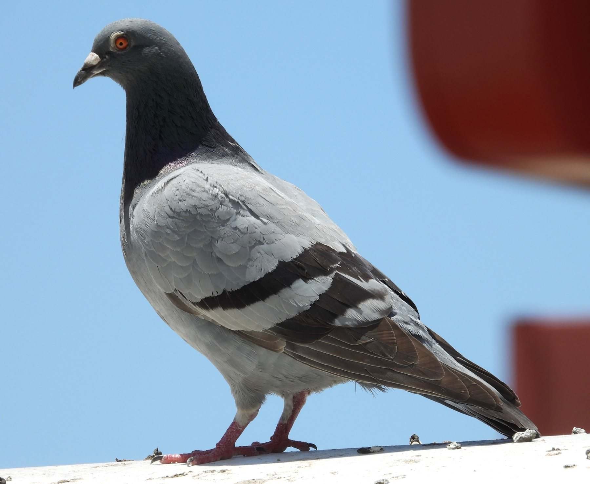
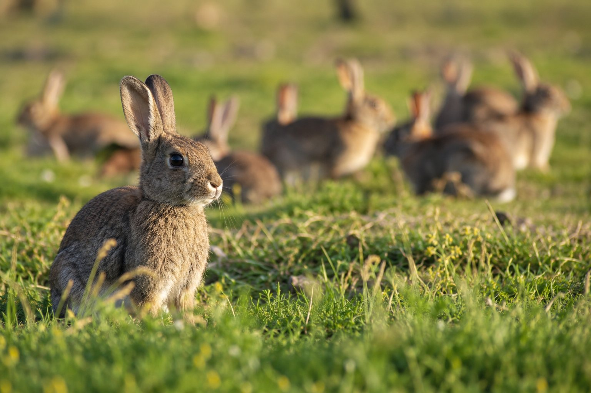

Feral Pigeon Control
Targeted control around commercial buildings, warehouses, agricultural facilities, wineries, sheds, rooftops, solar panels and suitable residential properties.
Learn more about feral pigeons →Fleurieu Ethical Marksman Service
Professional contract shooting services specialising in targeted vertebrate pest animal control using professional, discreet and highly effective shooting solutions.
Fleurieu Ethical Marksman Service provides professional, humane and discreet vertebrate pest animal control for homeowners, businesses, primary producers, conservation organisations and land managers.
Targeted pest animal control
Our work is focused on reducing the impacts of pest animals on agriculture, biodiversity, native wildlife, vegetation, habitat, infrastructure, biosecurity and culturally sensitive areas.
Every property and pest issue is different. Our approach is targeted and site-specific, using appropriate equipment, technology and control methods to achieve effective outcomes while maintaining a strong focus on safety, animal welfare, compliance and minimising impacts on non-target species.
Vertebrate pest control services
Control programs are tailored to the species, site, surrounding land uses and the management objectives of the client.
Targeted control around commercial buildings, warehouses, agricultural facilities, wineries, sheds, rooftops, solar panels and suitable residential properties.
Learn more about feral pigeons →Targeted control for rural properties, vineyards, conservation areas and commercial sites where grazing, browsing or digging is causing agricultural or environmental damage.
Learn more about rabbits →Discreet fox control for rural properties, vineyards, conservation areas and other sites where predation is affecting native wildlife, poultry, lambs or other livestock.
Learn more about foxes →Targeted management where introduced deer are affecting agriculture, biodiversity, vegetation, infrastructure or other land-management objectives.
Learn more about deer →Not every pest animal issue fits neatly within the main service categories. FEMS can assess other vertebrate pest animal problems on a case-by-case basis.
Make an enquiry →Understanding pest animals
Australia’s unique plants and animals can be highly vulnerable to introduced species. Learn more about common pest species, the impacts they cause and why responsible management can be important.

Highly adaptable birds that can create hygiene, infrastructure, feed contamination and biosecurity problems.
Learn more →
One of Australia’s most destructive introduced herbivores, affecting vegetation regeneration, soils and agriculture.
Learn more →An often overlooked grazing and browsing pressure on pasture, crops, vineyards, revegetation and native vegetation.
Learn more →A major introduced predator of native wildlife that can also cause serious losses to poultry, lambs and other livestock.
Learn more →Increasing pressure on agricultural and natural landscapes through browsing, grazing, trampling and soil disturbance.
Learn more →A serious threat to Australian wildlife. This information is provided for education and is not advertised as a standard FEMS control service.
Learn more →Conservation & environmental management
Predation, grazing, browsing, soil disturbance and competition can affect entire ecological communities and undermine efforts to restore degraded landscapes.
Effective pest management can support native wildlife, vegetation regeneration, habitat restoration, agricultural productivity, biosecurity and the protection of environmentally and culturally sensitive areas.
The objective is not simply to remove pest animals, but to reduce their impacts and protect the values being affected.
Learn more about our conservation approachWho we work with
Why choose FEMS
What our clients say
See current reviews from clients who have used Fleurieu Ethical Marksman Service.
View our Google ReviewsRather than displaying a review count that can become outdated, the link takes visitors directly to the current FEMS Google Business Profile.
Service areas
FEMS operates throughout the Fleurieu Peninsula, Adelaide Hills, Southern Adelaide and surrounding regions. Travel outside these areas may be available for suitable projects.
Make an enquiry
If you are experiencing a pest animal problem, provide some information about the property, species and impacts you are seeing. We can discuss your requirements and determine an appropriate management approach.